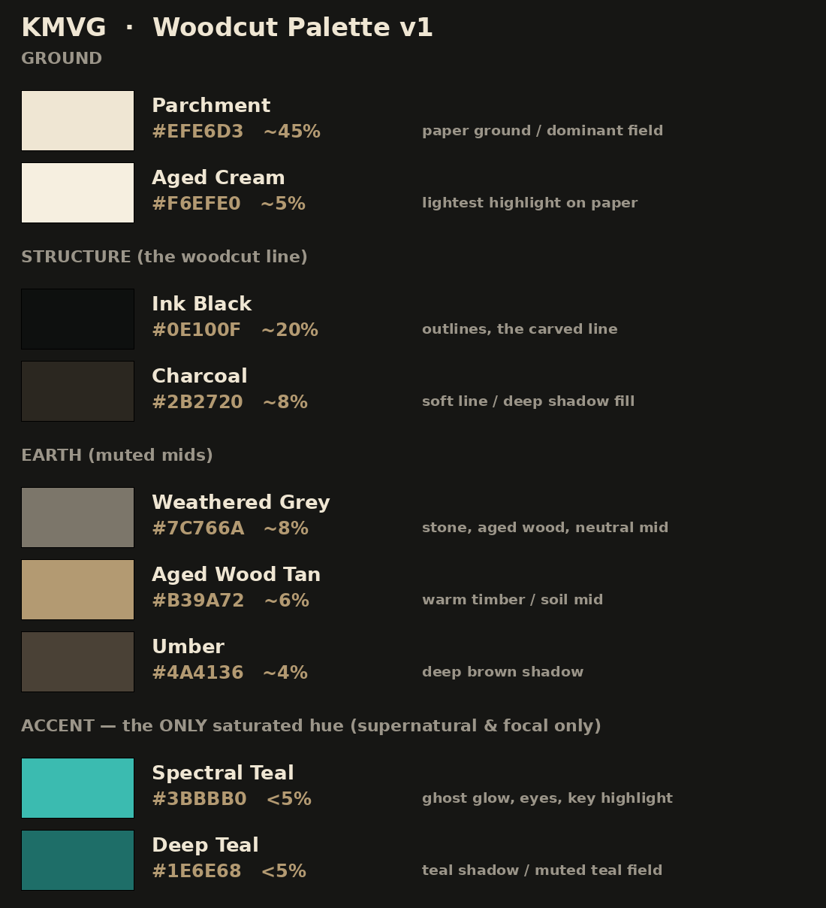

Single-scene woodcut establishing shots at the locked 2.25:1 master (1152×512). Each prompt is mined from the POI's own narration for architectural clues (txt2img only — no reference photos). Buildings get the ghost badge as map marker; worship gets a woodcut church glyph.
Operator feedback on the first pilot: too lifelike, missing the haunted-Halloween flavor. This pass keeps the narration-driven subject but swaps daytime for moonlit night, adds fog / gnarled trees / crows / spectral teal, and pushes a bolder graphic woodcut. Compare across each row: Original (overcast daytime) → h1 (haunted, cfg 3.5) → h2 (max spooky, cfg 4.5).
The detail-sheet hero is a 20%-of-screen-height banner that must survive both portrait and
landscape. A single 2.25:1 master with the subject in a centered safe band + centerCrop
fits every device box with no stretch. Master (teal border) shown above its real device crops.
Muted period base + one signature accent. Hex derived from the approved renders. The two teals (ringed) are the only saturated hues — combined <8% of any image, supernatural/focal only.

One sample per remaining asset class — the woodcut direction holds across the whole estate, so the app reads as one branded set.
The original direction-validation renders — same subject (Salem Witch House) in three hero aspects plus an icon and a ghost. Confirmed single-banner beats triptych and the woodcut set coheres.